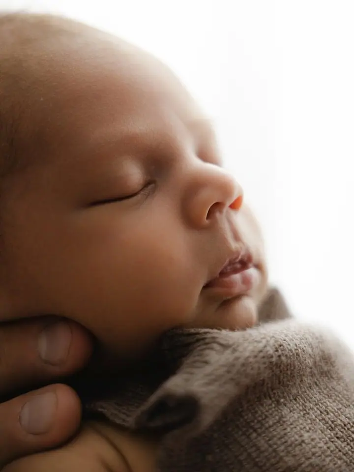
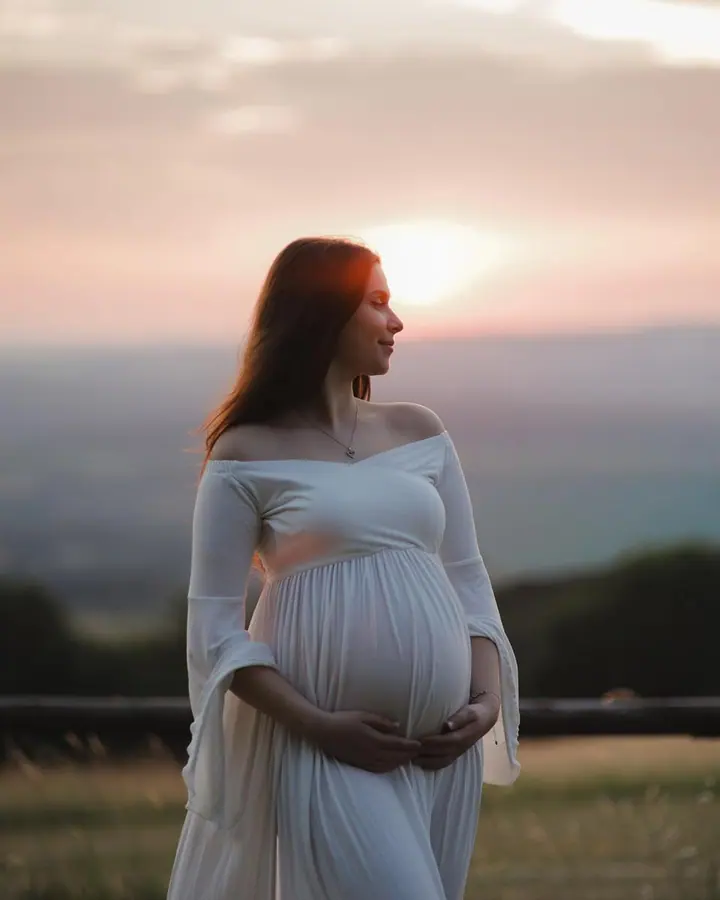
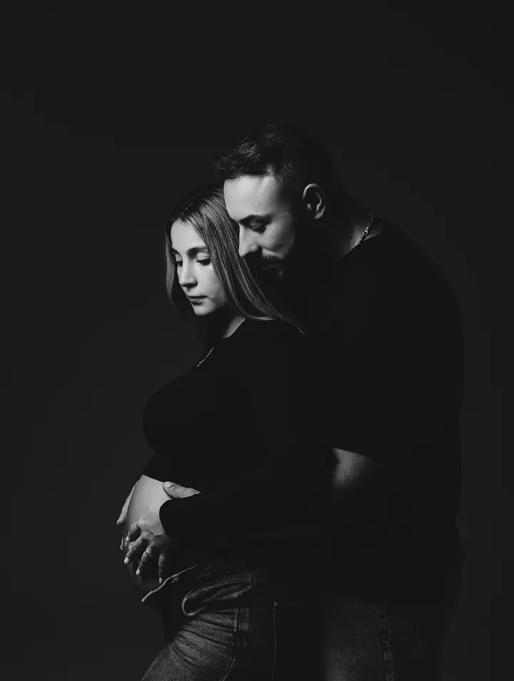

Newborn focení
Nadčasové novorozenecké fotky s minimem rekvizit, v ateliéru nebo u vás doma. Fotím miminka do 3 měsíců, samotná, se sourozenci i s rodiči.

Jmenuji se Andrea Hlaváčová a v Karlovarském kraji fotím miminka, budoucí maminky i celé rodiny. Mám ateliér u Karlových Varů, ale ráda za vámi přijedu domů nebo spolu v…
Rezervovat termínFotím těhotenství, novorozence, rodiny a dětské narozeniny. Můj styl je nadčasové newborn focení bez přebytečných rekvizit: čisté tóny a vaše náruč.


Ateliér mám v Dalovicích u Karlových Varů. Když po porodu nechcete nikam cestovat, přijedu za vámi a všechno nafotíme v pohodlí domova, stačí mi jeden koutek u okna. Rodiny ráda fotím i venku na předem domluveném místě, za sluníčka i za oblačna.
U miminek se řídím jejich naladěním a s malými dětmi se snažím mít hotovo dřív, než se unaví. Kromě rodin fotím i svatby a prezentační fotky pro značky a podniky. Každý rok také chystám vánoční ateliér plný světýlek.
Co fotím
Nadčasové novorozenecké fotky s minimem rekvizit, v ateliéru nebo u vás doma. Fotím miminka do 3 měsíců, samotná, se sourozenci i s rodiči.
Moderní těhotenské focení v ateliéru na míru vašemu vkusu, nebo něžné focení v přírodě. Vyfotím vám obojí.
Fotky do rámečku i momentky do rodinného alba, venku, doma nebo v mém ateliéru. Focení trvá většinou nejvýš hodinu, aby ho zvládly i malé děti.
Milníkové focení k 1., 2. nebo třeba 10. narozeninám s tematickými fotkami oslavence i rodiny. Výzdobu po domluvě připravím a dort na patlačku si můžete donést vlastní.
Postup
Ozvěte se mi přes Reservio, telefonem, e-mailem nebo přes sociální sítě. Na newborn focení se objednejte ještě v těhotenství, stačí mi znát termín porodu.
Společně vybereme, jestli budeme fotit v ateliéru, u vás doma, nebo venku, a poradím vám, co si vzít na sebe.
Rodinné focení trvá většinou nejvýš hodinu. Newborn focení trvá zhruba 1,5 až 3 hodiny i s krmením, přebalováním a uspáváním, protože tempo udává miminko.
Po focení vám pošlu náhledovou galerii a fotky si vyberete sami. Hotové upravené fotografie dostanete elektronicky v soukromé online galerii.
Otázky
Ideálně ještě v těhotenství, stačí mi znát termín porodu. Po narození mi dáte vědět a domluvíme termín i detaily. Miminka fotím do 3 měsíců.
Nemusíte. Přijedu za vámi, vše potřebné přivezu s sebou a do fotek zahrneme i vaše domácí prostředí. Domácí focení bývá navíc kratší než ateliérové.
Fotíme za sluníčka i za oblačna. Jediné, co nám vadí, je déšť, a pak spolu najdeme nejbližší náhradní termín.
Ano. Nabízím balíčky od focení obřadu přes půl dne až po celý svatební den a v Karlovarském kraji máte dopravu zdarma.